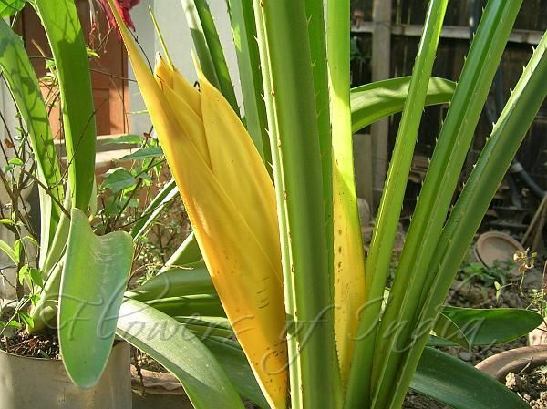

Overview of Ketaki
Ketaki – Pandanus odoratissimus is an Ayurvedic herb used for the treatment of various conditions such as diabetes, threatened abortion, fever, joint pain, earache, and psychiatric conditions.
Botanical Information
- Latin Name: Pandanus odoratissimus Linn., Pandanus tectorius, Pandanus odorifer
- Family: Pandanaceae (Ketaka Kula)
Vernacular Names
- Hindi: Kevada, Kewda, Kewra, Kevra
- English: Screw Pine, Palau Fruit, Screw Pine, Pandanus Tectorius or Pandanus Odoratissimus
- Bengali: Keya
- Gujarati: Kevado
- Kannada: Kedage
- Marathi: Kevada
- Tamil: Javnana chedi
- Telugu: Mogali chettu
Sanskrit Synonyms
- Soochi Pushpa, Suchika Pushpa – The flowers are pointed like a needle
- Trakachada – The leaves are pointed like a spear
- Sugandha – Flowers have fragrance
- Trinashunya, Ketaki, Kambuka, Lalinaka
- Karatruna, Krakacha Tvacha, Jambuka, Suvarna Ketaki
Morphology
Morphology of Pandanus odoratissimus: It is a small branched, palm-like tree growing to a height of 3-4 meters, with a twisted trunk supported by brace roots. The trunk is twisted and has a shoot-like appearance touching the ground. The leaves grow in clusters at the branch tips, are 40-70 cm long, sword-shaped, stiff, and spiny bluish-green. The tree bears fragrant white flowers in clusters and the fruits are oval to round, 4-6 inches in diameter. It is found throughout India in temperate climates.
Properties, Part Used, Dosage
- Rasa (Taste): Tikta (Bitter), Madhura (Sweet), Katu (Pungent)
- Guna (Qualities): Laghu (Light for digestion), Snigdha (Slimy in nature)
- Vipaka: Katu (Undergoes Pungent taste after digestion)
- Veerya (Potency): Ushna (Hot)
- Karma (Actions): Kaphapitta Shamaka (Reduces vitiated Kapha and Pitta dosha)
- Part Used: Root, Flower
- Dosage: Cold infusion – 40 to 50 ml, Distillate – 30 to 40 ml, Powder – 3 to 5 g
Chemical Composition
Chemical composition of Pandanus odoratissimus: The chief constituent of the oil (of flowers) is methyl ether of beta-phenylethyl alcohol. The oil also contains diterpene, d-linalool, phenylethyl acetate, citral, phenylethyl alcohol, ester of phthalic acid, fatty acids, and stearoptene. The leaves contain piperidine alkaloids.
Traditional Benefits
- Madhura: Sweet
- Tikta: Bitter
- Kaphahara: Balances Kapha, useful in productive cough, asthma, bronchitis, chest congestion
- Katu: Pungent
- Laghu: Light to digest
- Chakshushya: Improves vision, good for eyes, useful in eye disorders
- Ketaki Fruit: Katu (Pungent), Tikta (Bitter), Laghu (Light to digest), Ushna (Hot)
- Balances Kapha and Vata Dosha
- Golden yellow colored flowers are considered to be of superior quality.
- Meals served in its leaf treat Granthi (tumor), fibroid
Adverse Effects
No adverse effect is known or reported after the use of Ketaki.